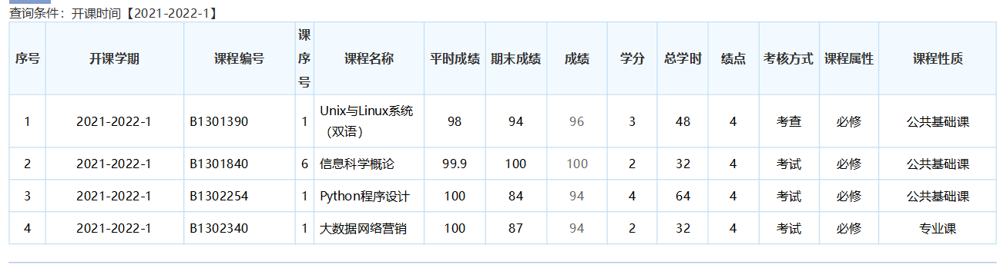

所学主要课程以及在校学习成绩情况
法学本科期间主要课程及成绩：
| 刑事执行法学96 | 刑事政策学95 | 犯罪学 95 | 社会原理 93 | 商法学 92 | 刑法学 （1） 87 |
| 公务员法学 92 | 法理学 91 | 刑事诉讼法学 90 | 劳动与社会保障法学 | 90国际法学（双语） | 86刑法学（2） 86 |
| 加权平均成绩87.46 |
大数据管理与应用专业（二学位）已学课程：
在法学专业的学习中我有以下心得：
一、通过学习提高了思想认识，增强了遵纪守法的自觉性。
在法学的学习过程中，通过书本知识我掌握了很多法学理论，通过老师的讲解我接触到了许多案例，我深刻地感受到，不学习法律法规有关条文，不熟悉规章制度对各环节的具体要求，就不可能做到很好地遵守规章制度和法律法规，并成为一名合格的公民。因此，掌握法律法规基本知识，学好各项规章制度，对我们的工作和生活具有重要的指导意义和现实意义。
二、通过学习进一步掌握了学习方法，并力求在理解和运用上下功夫。
法律法规的学习不是一蹴而蹴，一时半会就可学成或学好记牢的，关键要靠长期的学习和积累，要养成长期学习的习惯，要有刻苦钻研的精神，要有不怕吃苦的毅力，只有思想上认识到学习的重要性，才能真正在实践中去学习，并自觉做一名遵纪守法遵章守纪的合格人员，学习法律法规，我认为没有捷径可走，要在短期尽快熟悉浩如烟海的法规体系知识，确有难度，但是任何事物都有它的两面性，同样对法律法规的学习也应有规律可循。在日常生活中有些法律法规与我们的生活息息相关，一刻也不能离开，我们就要重点地去学，下功夫去理解和记忆，以便在工作能够熟练地运用。如国家法典中的《宪法》、《刑法》、《民法》、《劳动法》、《中华人民共和国合同法》、和等这些与我们密切相关的法律法规，我们就要重点去把握、去理解。 在学习方法上，要联系实际重点学习，并做到学习与实践运用相结合，学法与守法相结合，做新时代遵纪守法、奋斗向上的好青年。
学习大数据管理与应用专业近一年来的感悟：
大数据管理与应用专业科目很多，是基于大数据基本理论和方法，培养兼备扎实学科基本理论、完善知识体系、系统性思维、行业前瞻性理念，适应经济、社会及科技发展需要，掌握大数据管理技术与方法，具备从事数据分析、决策、信息管理等工作，具有宽口径知识和较强适应能力及现代科学创新意识的复合型高级专门人才。这与我们从小到大接触到的许多纯理论学科，学习的方法是有很大差异的。所以，在学习的时候，方法必须有所突破，才能有好的学习效果。在学习过程中，我意识到了正确利用书籍和善于利用网络，多进行实践的重要性，在学习中要学会利用搜索引擎，论坛等自己寻找问题的解决方法。
学习的路还很长，但我依然会不顾一切的努力前进，去学习、去读书、去受教育、去看山川河流，要站在自己所热爱的世界里，闪闪发亮。